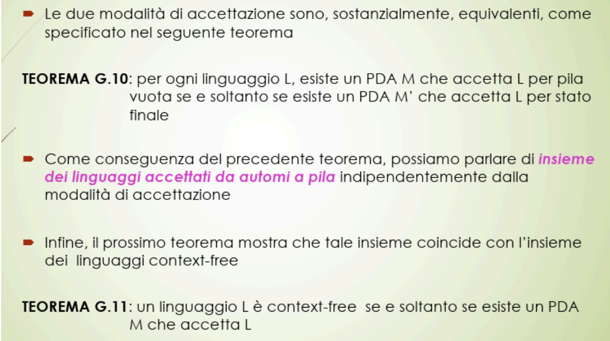
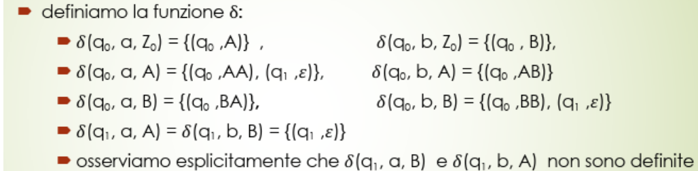
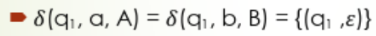
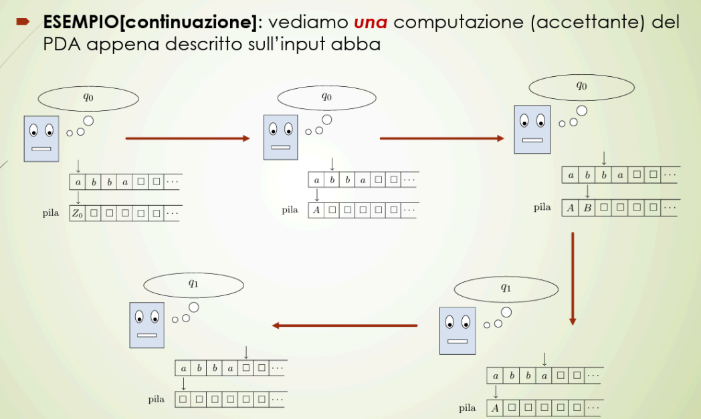
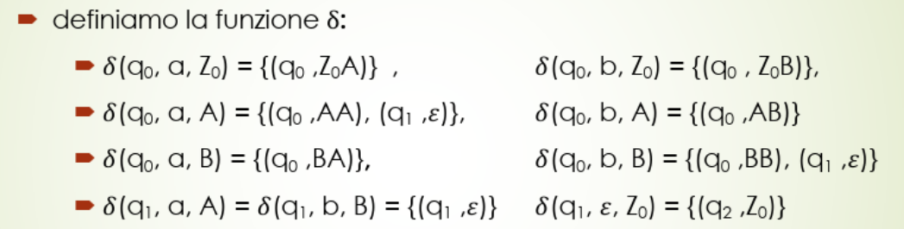
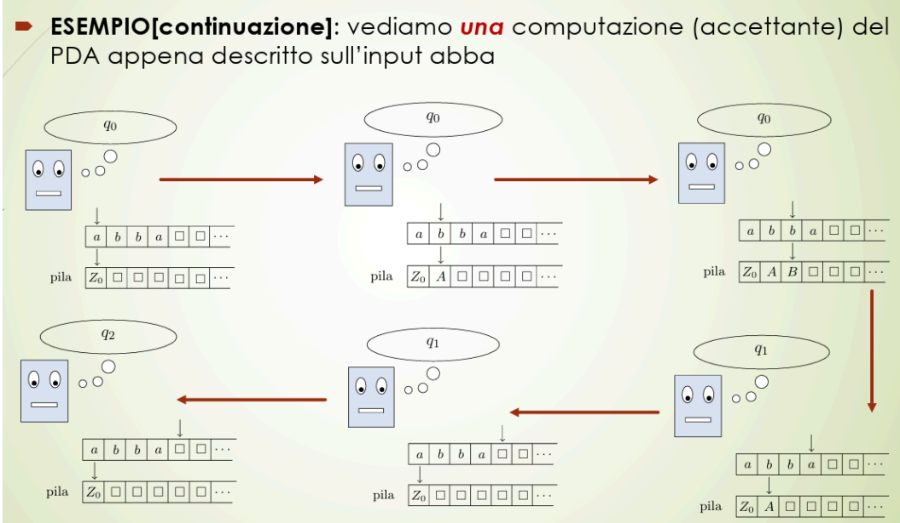
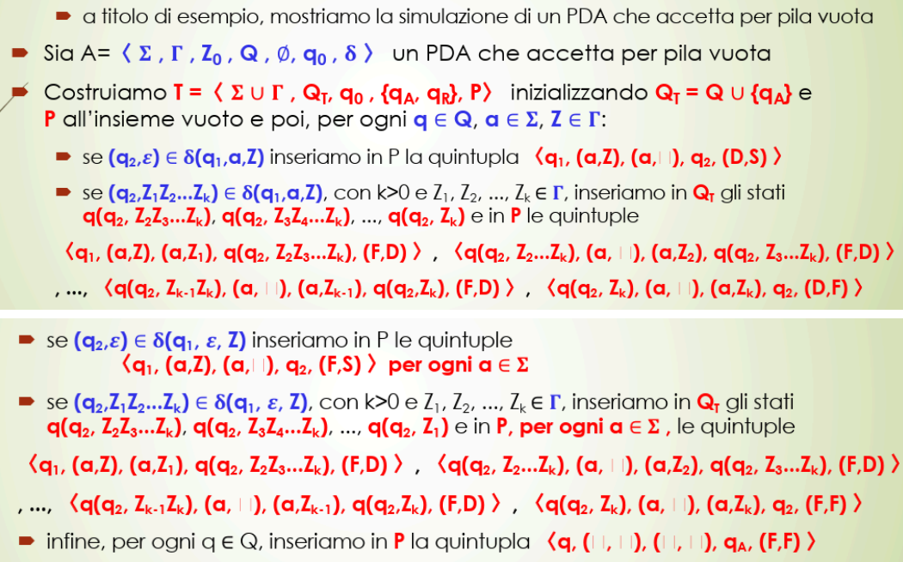
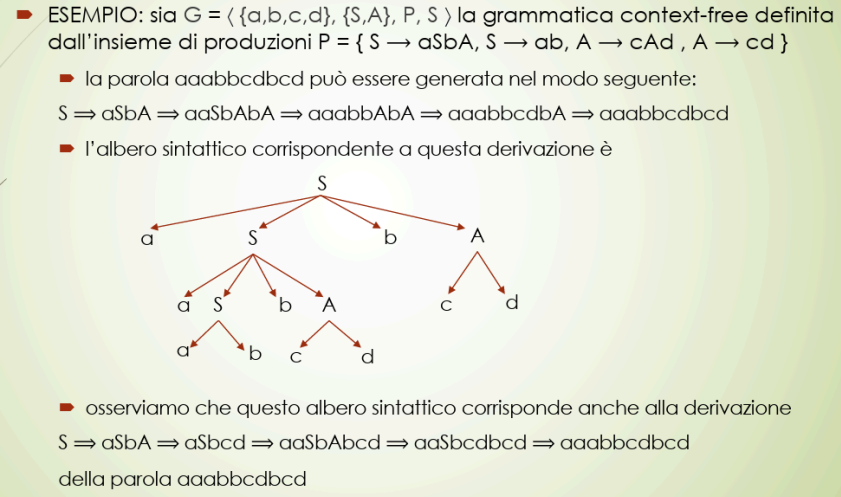
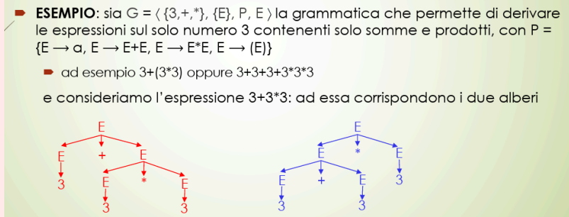

Questa lezione riprende due teoremi principali e i conseguenti concetti

Ora procediamo a vedere due esempi di PDA per i due tipi di accettazione
ESEMPIO 1: PDA che accetta per pila vuota
Costruiamo un PDA
non so perché ma la prof ha invertito l'insieme degli stati(quelli in pos 4) con , essi andrebbero scambiati per definizione vista in PDA
Questa PDA riconosce per pila vuota perché come stato finale ha un insieme vuoto
-
può terminare solo con pila vuota
-
riconosce le parole di queste sono le varie transizioni della funzione: 
-
riempie la pila finché:
- non raggiungiamo metà della parola da leggere
-
In questa fase, per ogni simbolo letto dall’input, controlla se corrisponde al simbolo in cima alla pila:
- Se corrisponde, lo rimuove dalla pila
- Altrimenti, la computazione fallisce
-
Se al termine dell’input la pila risulta completamente vuota, allora la parola è palindroma e di lunghezza pari, e quindi accettata.
come faccio a dirgli di comportarsi diversamente dopo la metà?
Il cambio di comportamento (da “accumulo” a “controllo”) non è scritto esplicitamente nel testo o nella struttura del PDA, ma è gestito dal non determinismo grazie alle transizioni:  È il PDA che decide “quando basta” e passa a controllare.
Non c’è un contatore della lunghezza, non ne ha bisogno.
- praticamente una volta raggiunta la metà inizia a svuotare la pila ma continua a leggere a destra ciò che avviene nella stringa di input
- se i caratteri corrispondono allora significa che si può eliminare il tutto

quindi una PDA può essere non deterministico
- quando non sa che fare crea due rami della stessa istanza per fare due scelte diverse
ESEMPIO 2: PDA che accetta per stato finale
Ora, costruiamo un PDA che riconosce PER STATO FINALE () il linguaggio delle parole palindrome pari sull’alfabeto queste sono le varie transizioni della funzione:  Quindi
- finché si trova PRIMA della metà aggiunge parole alla pila (NON CANCELLANDO )
- quando arriva alla metà, se può, cancella
- se cancella tutto e arriva a leggere, di nuovo, , entra in e accetta anche qui si applica il non determinismo perché “a una certa” deve cambiare modo di fare 
Vogliamo simulare un PDA con una Macchina di Turing
Visto che si assomigliano, hanno nastri ecc… si possono fare simulazioni di questo genere è a titolo di esempio quindi penso sia un po’ inutile 
spiegazione chiara di tutto ciò che sta sopra:
🎯 Obiettivo Dimostrare che una Macchina di Turing (TM) può simulare un PDA, cioè che ogni linguaggio accettato da un PDA per pila vuota può essere accettato da una TM deterministica.
Questo dimostra che PDA ⊆ TM, ovvero che i linguaggi context-free sono riconoscibili anche da una macchina di Turing.
🧩 Componenti in gioco
Il PDA è definito come:
A = ⟨ Σ, Γ, Q, Z₀, Qₐ, ∅, δ ⟩
- Σ: alfabeto di input
- Γ: alfabeto della pila
- Q: stati del PDA
- Z₀: simbolo iniziale della pila
- Qₐ: stati accettanti della TM (non del PDA)
- δ: funzione di transizione del PDA
⚠️ Il PDA accetta per pila vuota, quindi non ha stati finali propri (
∅in sesta posizione).
🔨 Costruzione della TM che simula il PDA
Costruiamo una TM
Tcome:T = ⟨ Σ ∪ Γ, Q_T, q₀, {qₐ}, P ⟩
- Σ ∪ Γ: l’alfabeto comprende sia input che pila (la TM li tratta come simboli sul nastro)
- Q_T = Q ∪ {qₐ}: stati del PDA più un nuovo stato finale qₐ
- q₀: stato iniziale della TM
- qₐ: stato accettante della TM
- P: insieme delle transizioni (quintupla) della TM
🔁 Simulazione delle transizioni del PDA nella TM
✅ Caso 1: Transizione semplice con ε
Se:
(q₂, γ) ∈ δ(q₁, a, Z)Allora in P si inserisce:
⟨q₁, (a, Z), (a, 1), q₂, D⟩
- Leggi
aeZ- Scrivi
a(o lo lasci uguale), scrivi1al posto diZ- Vai a
q₂, muovi a destra
✅ Caso 2: Transizione che spinge più simboli
Se:
(q₂, Z₁Z₂...Zₖ) ∈ δ(q₁, a, Z)
- Si creano stati temporanei in Q_T per gestire ciascun push
- Si scrivono i simboli sulla “pila” della TM da destra a sinistra:
Zₖ, Zₖ₋₁, ..., Z₁
✅ Caso 3: Transizione con ε sull’input
Se:
(q₂, γ) ∈ δ(q₁, ε, Z)Per ogni
a ∈ Σ, si inserisce:⟨q₁, (a, Z), (a, 1), q₂, D⟩Serve per simulare le transizioni del PDA che agiscono solo sulla pila.
✅ Caso finale: accettazione per pila vuota
Alla fine, per ogni
q ∈ Q, se la pila è vuota, si inserisce:⟨q, (⊥, ⊥), (⊥, ⊥), qₐ, (F, F)⟩(⊥ = simbolo di margine o vuoto)
✅ Conclusione
La TM costruita simula fedelmente le transizioni del PDA, accettando se e solo se il PDA avrebbe svuotato la pila.
Quindi:
L(N(M)) ⊆ L(TM)
ESERCIZIO da fare: dimostrare l'equivalenza di A e T
Fino ad ora
fino ad ora abbiamo creato delle funzioni che si limitano a
- consumare un elemento a
- non consumare un elemento a quindi sostanzialmente abbiamo l’unione di queste due funzioni con un PDA non deterministico e che in questo caso si riferisce solo a q1
Invece un PDA deterministico?
semplicemente per renderlo deterministico per:
- ogni stato interno
- ogni simbolo sul nastro
- ogni azione da scegliere sia solo e soltanto una
DEFINIZIONE
Un PDA è deterministico se ogni , per ogni , e per ogni accade che
in poche parole la somma delle azioni per un dato simbolo e stato interno deve essere 1, quindi una delle due
Una piccola differenza
Sappiamo che dal punto di vista della calcolabilità, una Macchina di Turing NON DETERMINISTICA è equivalente a una Macchina di Turing DETERMINISTICA ossia, tutto ciò che possiamo fare con la NON DETERMINISTICA lo possiamo possiamo fare anche con la DETERMINISTICA
Vale lo stesso per i PDA?
No, perché esistono dei linguaggi context-free che non sono accettati da automi a pila non deterministici
da qui viene un teorema:
TEOREMA G.12
L’insieme dei linguaggi accettati da automi a pila deterministici è un sottoinsieme proprio () dei linguaggi context-free
In altri termini, gli automi a pila deterministici sono ‘’strettamente meno potenti’’ di quelli non deterministici.
Conclusione Macchina di Turing VS PDA
🔍 La domanda che la prof si pone è:
Se possiamo trasformare (lez. iniziali) un PDA non deterministico (NPDA) in una macchina di Turing non deterministica (NTM), e poi una NTM in una deterministica (DTM)…
allora perché non possiamo “rientrare” e costruire un DPDA equivalente?
🚨 Risposta:
Perché non sappiamo trasformare una DTM in un PDA deterministico!
Cioè:
- Possiamo partire da NPDA → NTM → DTM, e accettare i linguaggi.
- Ma non possiamo tornare indietro da DTM → DPDA, perché:
- I PDA hanno meno memoria (solo una pila).
- E non possono simulare ogni DTM.
✅ Quindi:
- Ogni linguaggio context-free è accettato da una macchina di Turing (deterministica).
- Ma non tutti i linguaggi context-free sono accettabili da un DPDA.
Alberi sintattici 🌳
È un classico albero informatico con
- nodi
- rami
- foglie che rappresenta il processo di derivazione di una parola secondo le regole della grammatica viste nelle lezioni scorse
Come è strutturato per essere applicato alle grammatiche
🔍 Struttura dell’albero sintattico:
-
Radice = S
Parte sempre dal simbolo iniziale della grammatica (cioè il punto di partenza della derivazione). -
Nodi interni = simboli non terminali (cioè ∈ VN)
Questi sono i simboli che vengono espansi secondo le regole di produzione. -
Foglie = simboli terminali (cioè ∈ VT)
Sono i caratteri finali della parola generata (quelli che vedi nell’output). -
Espansione dei nodi Rami:
Se in una regola hai per esempioA → x₁ x₂ ... xₙ,
allora nel tuo albero:Asarà un nodo internox₁, x₂, ..., xₙsaranno i suoi figli, nell’ordine indicato dalla produzione.
gli alberi sintattici servono per fornire una desrizione sintetica di come è strutturata sintatticamente una parola
- ti mostra quali produzioni l’hanno generata
ESEMPIO PRATICO

L'osservazione è molto importante perché dice uno stesso albero sintattico corrisponde a più di una derivazione.
Significa che una stessa parola può essere generata in modi diversi, cioè seguendo derivazioni diverse, ma che alla fine portano allo stesso albero sintattico.
Quindi da un albero sintattico possono corrispondere più derivazioni
però c'è un problema ovvero che una singola parola può corrispondere più di un albero sintattico
- ecco un esempio
- questo può causare ambiguità di lettura della parola 
è un problema perché gli alberi sintattici sono usati anche per capire il significato delle parole al livello anche semantico, questi due alberi danno un significato differente Prendiamo l’esempio nella foto, e ipotizziamo che l’albero sia impostato per interpretare la parola generata PARTENDO DAL BASSO
- ALBERO IN ROSSO:
3 + (3 * 3) = 12 - ALBERO IN BLU:
(3 + 3) * 3 = 18
Sarebbe veramente bello poter capire in anticipo se una grammatica sia ambigua o no MA OVVIAMENTE NON SI PUÒ FARE.
Da qui viene fuori il teorema che dà dei dettagli sulle ambiguità
Teorema G.13
sia l’insieme delle grammatiche di tipo 2 ambigue → il linguaggio è non decidibile.
Ciò significa che non esiste un algoritmo che, data una grammatica G di tipo 2 decide se G è ambigua
Chiacchiere finali della prof
- 📌 I linguaggi di programmazione “grosso modo” sono di tipo 2 (context-free):
Ovvero: la struttura sintattica di base di un linguaggio di programmazione può essere espressa con una grammatica context-free.
Tuttavia, alcune regole, come per esempio l’unicità della dichiarazione di una variabile, richiedono controlli più potenti → cioè di tipo 1 (context-sensitive).
- 💡 Si possono separare gli aspetti:
- Di tipo 2: la struttura del programma.
- Di tipo 1: le regole contestuali, come i nomi unici, i tipi delle variabili ecc.
- 🔍 L’analisi sintattica (
parsing):
- Viene divisa in due fasi: una per controllare la struttura generale (tipo 2), l’altra per gli aspetti contestuali (tipo 1).
- ⚙️ Il
parsingè la fase di verifica della correttezza del programma:
- Serve prima della traduzione in codice eseguibile.
- In questa fase si costruisce l’albero sintattico della frase/programmazione.
- Da questo albero poi si genera il codice oggetto (eseguibile).
- 📚 Le grammatiche formali sono nate per descrivere le frasi nei linguaggi naturali, ma…
- …sono risultate inadatte a quello scopo.
- Tuttavia, si sono rivelate perfette per analizzare i linguaggi di programmazione.
- 💡 A cosa servono nei linguaggi di programmazione?
- Per studiare la sintassi.
- Per descrivere formalmente se un programma è corretto dal punto di vista sintattico.
- 🧠 Ogni linguaggio di programmazione può essere associato a una grammatica :
- Un programma è sintatticamente corretto se è una parola del linguaggio generato da .